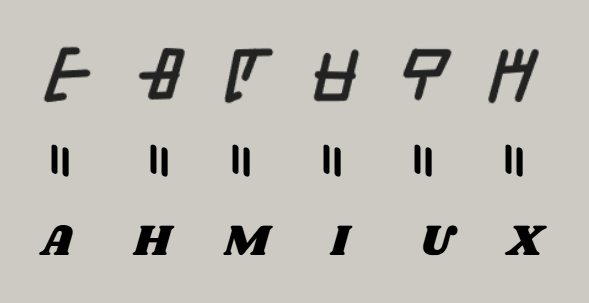
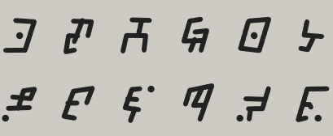

de Voyage
Page 1
Je n'ai jamais aimé voyager. L'idée même de quitter un environnement familier pour me confronter à l'inconnu ne m'a jamais attiré. Il y a, dans le déplacement, une forme d'instabilité que je n'ai jamais vraiment su apprécier.
Je préfère les choses fixes, les systèmes que l'on peut observer, comprendre, reconstruire sans avoir à en modifier constamment les paramètres. Pourtant, c'est précisément ce que je m'apprête à faire. Non pas par envie, ni par curiosité, mais par nécessité.
Car ce que j'ai entre les mains depuis des mois — peut-être des années si je suis honnête avec moi-même — ne peut pas être résolu ici. Pas avec ce que j'ai à disposition. Les runes que j'étudie ne sont pas complètes. Elles ne l'ont jamais été.
Ce ne sont que des fragments, des morceaux isolés d'un ensemble bien plus vaste, et tout ce que j'ai tenté jusqu'à présent n'a fait que confirmer cette idée. J'ai essayé de les analyser comme un alphabet, de leur attribuer des correspondances phonétiques, de repérer des répétitions qui pourraient suggérer une structure grammaticale.
Certaines hypothèses semblaient tenir, temporairement. Mais elles s'effondraient toujours dès que j'introduisais un nouveau fragment. Comme si ce que je possédais n'était pas suffisant pour stabiliser l'ensemble.
C'est pour cela que je pars. Pas parce que je le veux, mais parce que je n'ai plus d'autre option. Ce journal sera le témoin de ce processus.
1Page 2 — Italie
L'Italie marque le premier véritable basculement dans ma perception du travail que j'ai entrepris. Jusqu'ici, mes recherches étaient confinées à un espace stable, où je pouvais ajuster mes hypothèses sans être confronté à des variations extérieures.
Les fragments que je retrouve dans cet environnement ne sont pas identiques à ceux que j'ai étudiés, mais ils en partagent suffisamment de caractéristiques pour confirmer une chose essentielle : je ne me suis pas trompé.
Dès les premiers jours, j'ai identifié plusieurs occurrences de formes similaires à celles que je connais déjà. Certaines sont presque identiques, d'autres présentent des variations légères, comme si elles appartenaient à un même groupe fonctionnel.
Très vite, un schéma s'est dessiné. Certaines runes semblent se transformer selon leur position ou leur contexte. D'autres conservent une forme stable, comme si elles représentaient des éléments fondamentaux du système.
Ce séjour en Italie n'est donc pas seulement une étape. C'est le moment où la recherche devient réelle. Où les hypothèses prennent forme. Où les premières traductions partielles apparaissent.
2Page 3 — Autriche
L'Autriche marque un tournant plus subtil, mais aussi plus important que les étapes précédentes. Les runes ne se présentent plus seulement comme des symboles isolés ou des variations locales. Elles commencent à apparaître comme des éléments intégrés dans une structure plus vaste.
Ce n'est plus seulement une question de traduction. C'est une question d'architecture.
J'ai passé beaucoup de temps à comparer les nouvelles formes avec celles que j'ai déjà cataloguées. Ce qui m'a frappé ici, c'est la manière dont certaines runes semblent interagir entre elles. Lorsqu'elles apparaissent ensemble, leur signification ne semble pas simplement additive. Elle change. Elle se transforme.
Cette découverte est importante, car elle modifie profondément mon approche. Je ne peux plus me contenter de traduire rune par rune. Je dois comprendre comment elles fonctionnent ensemble.
Je suis maintenant certain d'une chose : je ne suis plus au stade de la découverte. Je suis au stade de la construction. Et ce que je construis… commence à prendre forme.
3Page 4 — République Tchèque
La République tchèque représente la première véritable convergence. Ce n'est plus seulement une question d'analyse ou de comparaison. C'est une question de révélation.
Pour la première fois, un lien se forme entre ce que j'ai observé et un lieu précis. Une indication. Un point de convergence qui dépasse les simples correspondances symboliques.
C'est en explorant ces correspondances que j'ai identifié une anomalie. Une configuration de runes qui revenait de manière inhabituelle, avec une cohérence difficile à ignorer. Cette séquence ne correspondait pas uniquement à un fragment isolé. Elle semblait former une sorte de signature.
Un monument. Ancien. Abandonné. Isolé. Mais surtout, structuré d'une manière qui correspond étrangement aux configurations que j'ai observées dans mes recherches.
Ce n'est pas une fin. C'est un début. Mais cette fois, un début éclairé.
4Page 5 — Lieu 1
Ces pages sont protégées.
Un mot de passe est requis pour continuer.
Mont Michael
Moi qui pensais enfin trouver la vérité, je me retrouve avec seulement une partie de traduction de ces runes, malheureusement pas assez pour comprendre quoi que ce soit.
En revanche, dans une cavité sur les abords du Mont, j'ai trouvé une inscription gravée dans la roche — cela mentionnait d'autres lieux où trouver ces runes. Peut-être que cette quête de réponse s'annonce plus fastidieuse que je ne le pressentais.

Page 6 — Allemagne
L'Allemagne marque un retour à une forme d'analyse plus rigoureuse, mais cette fois avec un avantage décisif : je ne pars plus de zéro.
J'ai remarqué que certaines runes semblent agir comme des pivots. Elles modifient la relation entre d'autres symboles, influencent leur interprétation, voire leur structure. D'autres semblent plus stables, comme des constantes, des éléments de base du système.
C'est également ici que je commence à percevoir une autre dimension du problème — le rôle de l'observateur. Dans quelle mesure ma manière d'analyser influence-t-elle ce que je découvre ?
L'Allemagne ne m'apporte pas de révélation majeure. Mais elle solidifie ce que j'ai commencé à construire. Et elle confirme que je suis sur la bonne voie.
6Page 7 — Brésil
Le Brésil a profondément modifié ma manière d'interpréter ce que je pensais déjà comprendre. Car au Brésil, le système ne se contente pas de se répéter. Il s'étend. Il se transforme. Il s'adapte.
Dès les premières observations, j'ai remarqué que certaines runes apparaissaient dans des contextes totalement différents de ceux que j'avais étudiés, mais avec des variations qui semblaient conserver leur fonction.
Je me suis donc concentré sur les relations. Sur la manière dont les runes apparaissent ensemble. Et très vite, une chose est devenue évidente : le système est plus dynamique que je ne l'avais imaginé.
Le Brésil ne m'apporte pas seulement de nouvelles runes. Il m'apporte une nouvelle compréhension de ce que ces runes sont réellement. Et cette compréhension change tout.
7Page 8 — Japon
Le Japon marque un changement fondamental dans ma manière d'aborder le système. Ici, quelque chose se précise. Le système ne se contente plus de montrer sa complexité. Il montre aussi sa structure.
Les runes apparaissent ici avec une régularité qui n'était pas aussi évidente dans les précédents lieux. Les combinaisons que j'observe ne sont pas aléatoires. Elles suivent des schémas précis, presque méthodiques.
Je commence également à ressentir une forme de familiarité avec certaines structures. Comme si je les avais déjà vues, ou presque comprises. Cette sensation n'est pas une illusion. Elle est le résultat de l'accumulation des observations précédentes.
Le Japon ne me donne pas cette clé. Mais il me montre à quel point je suis proche de la comprendre.
8Page 9 — Argentine
L'Argentine a introduit une rupture différente de toutes les étapes précédentes. Les structures que j'observe ne s'étendent plus seulement vers de nouvelles variations. Elles pointent. Elles désignent quelque chose.
Tout a commencé dans des vestiges anciens, liés à des civilisations qui ont laissé derrière elles des structures dont la complexité dépasse souvent ce que l'on attribue habituellement à leur époque.
En reconstituant ces séquences, j'ai pu établir des correspondances plus précises. Mais ce qui m'a le plus marqué, c'est qu'au sein de ces structures, une séquence particulière revenait avec insistance. Comme si elle indiquait quelque chose.
Je suis maintenant certain d'une chose : je ne suis plus seulement en train de chercher. Je suis en train de me rapprocher d'une réponse.
9Lieu 2
Ces pages sont protégées.
Un mot de passe est requis pour continuer.
The Five Fingers
Je pensais atteindre mon but cette fois-ci, pourtant la gravure servant de traduction ici était brisée ne me laissant que quelques runes que je connaissais déjà.
Je pense que je commence à perdre pied. Je ne pense qu'à ça quand je marche, quand je mange, quand je dors. Je sens pourtant que je m'en approche petit à petit.

Page 11 — Laos
Le Laos marque un tournant décisif, non pas par une découverte spectaculaire, mais par une convergence. Pour la première fois depuis le début de mon voyage, je n'ai pas eu l'impression d'ajouter quelque chose de nouveau, mais de voir tout ce que j'avais découvert s'aligner.
Le système des runes n'est pas seulement structuré. Il est hiérarchisé. Il existe des niveaux. Des couches. Et ces couches interagissent entre elles.
Je suis proche. Très proche. Je ne suis plus dans l'incertitude. Je suis dans la dernière phase de compréhension.
Le Laos ne me donne pas cette clé. Mais il me donne quelque chose d'encore plus important : la certitude que je peux la comprendre.
11Page 12 — Colombie
La Colombie s'inscrit comme une étape de consolidation plus que de découverte. Ce que je découvre ici n'est pas une simple répétition de ce que je sais déjà. C'est une validation. Une confirmation à grande échelle.
Je commence à distinguer les couches plus clairement. La couche la plus visible, celle des symboles individuels. Puis une couche intermédiaire, où les combinaisons forment des séquences longues. Et enfin une couche plus profonde, où ces séquences interagissent pour produire une structure globale.
La Colombie ne m'apporte pas la clé. Mais elle me confirme que la clé existe. Et surtout, elle me prépare à la trouver.
12Page 13 — Indonésie
L'Indonésie ne m'apporte pas de révélation spectaculaire au sens classique du terme, mais plutôt une forme de stabilité qui tranche avec tout ce que j'ai connu jusque-là.
Je peux désormais identifier la quasi-totalité des structures que je rencontre. Je peux anticiper leurs interactions. Je peux même reconstruire des séquences entières avec une précision qui aurait été impossible à atteindre auparavant.
L'Indonésie me donne quelque chose d'essentiel : la certitude que je suis prêt.
L'Indonésie n'est pas la fin. Mais elle est le dernier seuil. Le point juste avant. Celui où tout devient possible. Mais rien n'est encore accompli.
13Page 14 — Départ
Je suis parti.
Il n'y a pas eu de moment spectaculaire, pas de rupture brutale. Il y a simplement eu un instant de bascule, presque imperceptible, où tout ce que j'avais accumulé jusque-là a cessé d'être un ensemble d'hypothèses pour devenir une trajectoire.
Ce journal s'arrête ici, non pas parce que le voyage s'arrête, mais parce que ce qui vient ensuite ne peut plus être consigné de la même manière. À partir de maintenant, tout change.
Et si je parviens à revenir, alors peut-être que ce que j'aurai découvert pourra être partagé. Mais si je ne reviens pas, alors ces pages seront tout ce qu'il restera.
Peut-être que quelqu'un, quelque part, pourra reprendre là où je m'arrête.
14Lieu 3 — Conclusion
Ces pages sont protégées.
Un mot de passe est requis pour continuer.
Place des Fêtes
Comme je m'y attendais, l'endroit n'est pas facile d'accès. Dire que tout ce voyage me ramène finalement à mon pays de départ. C'est comme si tout cela n'avait été qu'une boucle dans laquelle je me suis retrouvé piégé.
Je suis actuellement dans les profondeurs des catacombes. Je sens que je touche au but. Pas de temps à perdre — j'avance. Je noterai ce que je trouverai, même si cela nécessite mon dernier souffle de vie.

Page 16 — Révélation finale
Un dernier verrou.
Un mot de passe est requis pour accéder à la conclusion.